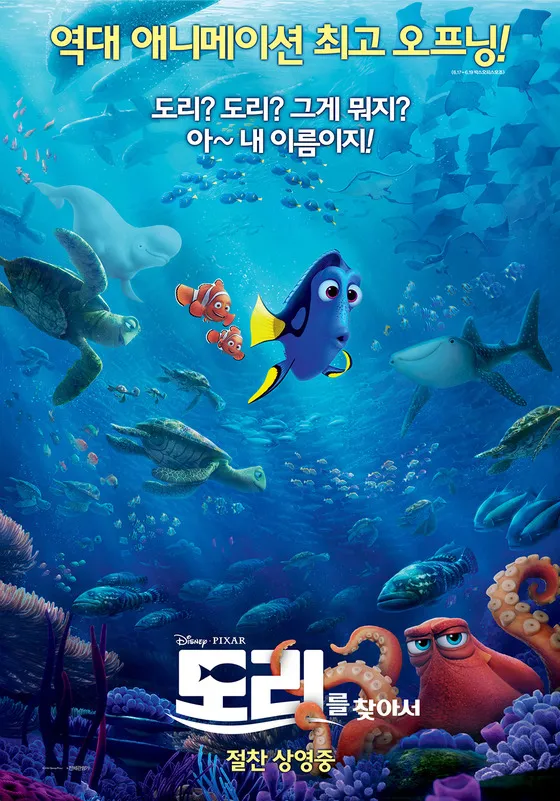

MBTI
ISTP
좋아하는 노래
좋아하는 영화
좋아하는 음식
소고기, 계란찜, 신라면 더레드, 탄산음료
싫어하는 음식
가지, 버섯, 탕후루, 모든 채소
소개
안녕하세요, 저는 육식주의자입니다. 채소의 비린맛을 느껴서 채소를 잘 먹지 못합니다!
취미
제 취미는 사주 및 타로 보기와 공부입니다
안녕하세요
제 이름은 민지영 입니다
웹 개발자가 꿈 입니다!
ISTP
소고기, 계란찜, 신라면 더레드, 탄산음료
가지, 버섯, 탕후루, 모든 채소
안녕하세요, 저는 육식주의자입니다. 채소의 비린맛을 느껴서 채소를 잘 먹지 못합니다!
제 취미는 사주 및 타로 보기와 공부입니다